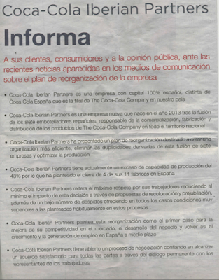
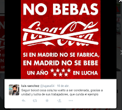
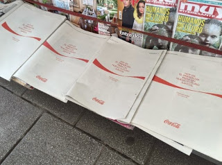

---
authors:
- admin
categories: [Marketing, ]
date: 2015-05-15T08:26:17+02:00
draft: false
featured: false
image:
caption: " "
focal_point: "Center"
projects: []
subtitle: El caso Coca Cola España
title: "Imagen de marca, posicionamiento social y RSC"
tags: [Marketing, ]
---
Finales de año. 2013
Coca Cola es la tercera marca más valiosa del mundo y la marca de la felicidad. Sin embargo, un terremoto está a punto de sacudir su imagen en España. El 9 de diciembre de 2013, Coca-Cola Iberian Partners, que agrupa a las siete embotelladoras de la marca en España, anuncia un ERE que afectaría a 1.200 empleados. La repercusión en medios de comunicación fue inmediata y al mismo tiempo, comenzaron las movilizaciones de trabajadores. Para tratar de contrarestar este efecto, Coca Cola Iberian Partners lanza un comunicado de prensa a toda página en los principales medios, en el que se desvincula de The Coca-Cola Company:

Sin embargo, estas explicaciones no son suficientes para la opinión pública y rápidamente aparecen las primeras llamadas al boicot a la marca, mientras que algunos directivos aficionados a apagar el fuego con gasolina no contribuyen a calmar los ánimos.

La estrategia de comunicación de la marca fue la más sensata en estas circunstancias: reducir al mínimo la presencia en los medios y mantener un perfil bajo. Durante el resto del año, no se emitio en televisión ninguna nueva campaña y la presencia en el resto de medios fue mínima.
Las consecuencias de la situación, sin embargo, son demoledoras en el mercado y se estima quela marca pierde un 50% de sus ventas en la zona centro.
Diciembre 2014
A finales de 2014, Coca Cola se lanza al contrataque con el ánimo de recuperar posiciones y con la campaña “Desde siempre, mucho más que un refresco” en la que se recalcan los valores sociales de la marca:
{{% youtube "DLRpROLC6wc" %}}
Abril 2015

Por desgracia para Coca Cola, la última palabra sobre este tema no estaba dicha y el 15 de abril de 2015, el Tribunal Supremo declara la nulidad de los despidos y las redes sociales vuelven a incendiarse. Esta vez, la marca opta de nuevo por la presencia en medios escritos, pero en lugar de utilizar el formato “comunicado” lanza directamente un mensaje:
Hoy es el primer día para un nuevo futuro juntos. Gracias por confiar en Coca Cola.

La empresa afirma que pretende poner punto y final a la crisis e iniciar una nueva fase ¿Pero, es suficiente con que la marca proponga pasar página para que lo hagan también sus consumidores?
¿Ha sido buena la estrategia de comunicación de Coca Cola durante la crisis?
Es evidente que la imagen de Coca Cola ha sufrido mucho durante este tiempo y que su estrategia de comunicación no ha sido efectiva contrarestando los efectos negativos. Ahora bien, ¿la estrategia de comunicación ha sido mala? En mi opinión, no había muchas alternativas. ¿Dónde ha estado el error? En febrero de 2014 el presidente de Coca Cola España declaraba:
No es mi empresa y no es mi ERE
Efectivamente, CocaCola Iberian Partners no es su empresa pero sí es su marca y la marca es el corazón y el gran intangible de The Coca Cola Company (más de 80.000 millones de dólares según Interbrand 2014). Considerar la gestión de la marca como un tema puramente de marketing o comunicación que puede llevarse de manera independiente de otros aspectos como la gestión de la cadena de valor o la política de recursos humanos puede tener consecuencias graves para el principal activo de la empresa.